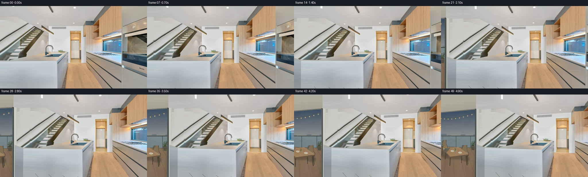
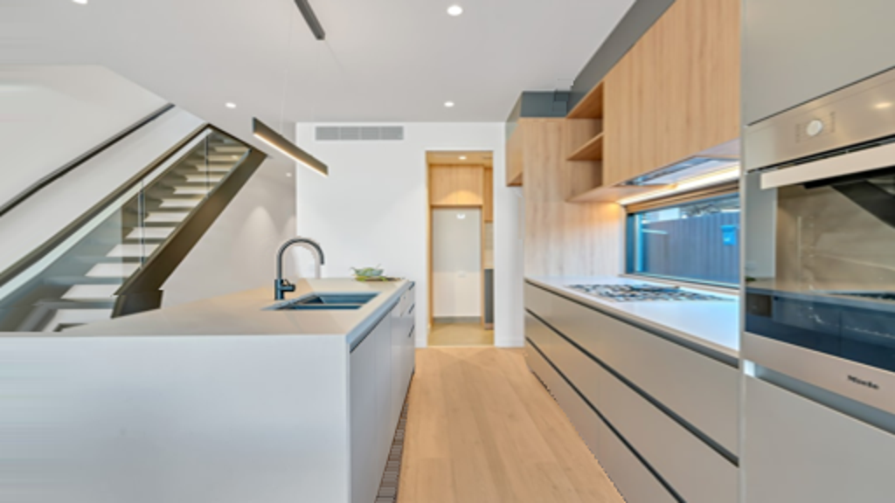
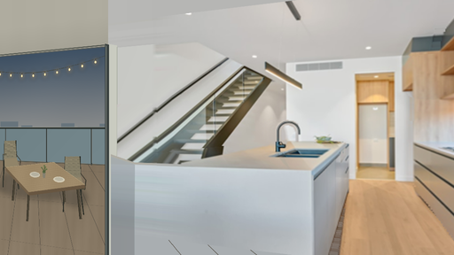
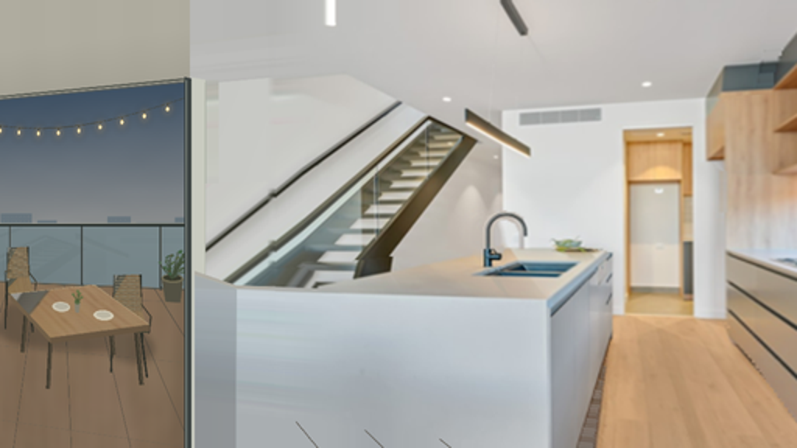

CODING AGENTS AS PIXEL WORLD MODELS
traex/GPT-6.1-Sol · static_080_turn_2
点击播放 · 原生 RGB 像素
逐轮保存的候选
回放视频、检查图与代码变化。
每份候选均可单独播放。实际图片检查记录在下方工具轨迹中。
候选 01播放与检查图
点击播放 · 原生 RGB 像素

展开代码变化
--- 上一保存版本
+++ 本次保存版本
@@ -0,0 +1,230 @@
+from pathlib import Path
+import math
+import numpy as np
+from PIL import Image, ImageDraw, ImageFilter
+import artifact_io
+
+ROOT = Path(__file__).resolve().parent
+W, H = 512, 288
+S = 3
+XL, YT, XR, YB = -360, -90, 525, 430
+rng = np.random.default_rng(31)
+source = np.array(Image.open(ROOT/'first_frame.png').convert('RGB'))
+CW, CH = (XR-XL)*S, (YB-YT)*S
+Y, X = np.mgrid[:CH, :CW].astype(np.float32)
+X = X/S+XL; Y=Y/S+YT
+
+def sample(a, x, y):
+ x=np.clip(x,0,a.shape[1]-1.001); y=np.clip(y,0,a.shape[0]-1.001)
+ ix=x.astype(np.int32); iy=y.astype(np.int32)
+ fx=(x-ix)[...,None]; fy=(y-iy)[...,None]
+ return (a[iy,ix]*(1-fx)*(1-fy)+a[iy,ix+1]*fx*(1-fy)+a[iy+1,ix]*(1-fx)*fy+a[iy+1,ix+1]*fx*fy)
+
+# A single extended, static image plane. The original photograph is not animated
+# independently: all motion is produced by the optical rotation below.
+xedge=np.clip(-X*.13,0,8)
+base=sample(source,xedge,np.clip(Y,0,H-1.001))
+# Seamless continuation of the wall and ascending stair rails on the near left.
+wall=np.zeros_like(base)
+wall[:]=[201,202,198]
+shade=-2.5*np.clip((-X)/90,0,1)+1.2*np.sin((Y-50)/90)
+wall+=shade[...,None]
+ceiling=sample(source,np.clip(-X*.08,0,20),np.clip(Y,0,34))
+wall=np.where((Y<35)[...,None],ceiling,wall)
+rail=sample(source,xedge,Y+.675*X-.675*xedge)
+base=np.where(((X<0)&(Y>=35)&(Y<112))[...,None],wall,base)
+base=np.where(((X<0)&(Y>=112)&(Y<192))[...,None],rail,base)
+canvas=Image.fromarray(np.clip(base,0,255).astype('uint8'))
+
+def points(p): return [((x-XL)*S,(y-YT)*S) for x,y in p]
+def mask_poly(poly):
+ m=Image.new('L',(CW,CH)); ImageDraw.Draw(m).polygon(points(poly),fill=255)
+ return m
+
+def fill_poly(poly, col):
+ ImageDraw.Draw(canvas).polygon(points(poly),fill=tuple(map(int,col)))
+
+def texture_poly(poly, texture):
+ im=Image.fromarray(np.clip(texture,0,255).astype('uint8'))
+ canvas.paste(im,(0,0),mask_poly(poly))
+
+def line(p, color, width=1):
+ ImageDraw.Draw(canvas).line(points(p),fill=color,width=max(1,round(width*S)),joint='curve')
+
+def ellipse(box,col):
+ x0,y0,x1,y1=box
+ ImageDraw.Draw(canvas).ellipse(((x0-XL)*S,(y0-YT)*S,(x1-XL)*S,(y1-YT)*S),fill=col)
+
+# The camera discovers an adjacent recessed balcony, through its glazed opening.
+# Colors, textures and material finish are related to the supplied kitchen.
+opening=[(-360,29),(-77,29),(-77,425),(-360,425)]
+t=np.clip((Y-29)/145,0,1)
+sky=np.empty_like(base)
+for c,(a,b) in enumerate(zip((59,78,98),(158,156,151))): sky[:,:,c]=a+(b-a)*t
+sky += (1.1*np.sin(X*.035+Y*.023)+.65*np.sin(Y*.08))[...,None]
+texture_poly(opening,sky)
+# Far, soft-edged skyline silhouettes, well beyond the static glass rail.
+for left,width,height in [(-360,48,9),(-308,17,6),(-281,37,14),(-237,22,8),(-207,44,5),(-159,24,11),(-129,40,6),(-91,17,10)]:
+ fill_poly([(left,155),(left,148-height),(left+width,148-height),(left+width,155)],(103,116,124))
+ line([(left,148-height),(left+width,148-height)],(116,126,132),.7)
+
+# Balcony deck, with perspective board divisions and natural fine wood grain.
+board=(2*np.sin(X*.11+Y*.049)+1.25*np.sin(X*.41+Y*.014)+.45*np.sin(X*1.9+Y*.008))
+light=np.clip((Y-170)/200,0,1)
+deck=np.empty_like(base)
+for c,v in enumerate((126,111,91)): deck[:,:,c]=v + 15*light + board
+texture_poly([(-360,179),(-77,179),(-77,430),(-360,430)],deck)
+for xx in range(-460,170,28):
+ endx=-215+(xx+215)*3.2
+ line([(xx,179),(endx,430)],(83,77,67),.65)
+for yy in [205,252,318,413]:
+ line([(-360,yy),(-77,yy)],(111,100,84),.45)
+# Balcony glass: desaturated partial reflection, dark powder-coated posts.
+glass=np.empty_like(base)
+for c,v in enumerate((113,132,137)): glass[:,:,c]=v+2.2*np.sin(X*.01+Y*.012)
+texture_poly([(-360,145),(-78,145),(-78,194),(-360,194)],glass)
+for xx in [-350,-270,-187,-105]:
+ line([(xx,144),(xx,196)],(53,58,55),2.2)
+ line([(xx+.9,145),(xx+.9,193)],(132,138,135),.55)
+line([(-360,144),(-77,144)],(39,46,43),3)
+line([(-360,142.7),(-77,142.7)],(159,160,147),.7)
+line([(-360,195),(-78,195)],(80,83,76),1.1)
+# Static softened furniture contact shadows.
+shadow=Image.new('RGBA',(CW,CH)); dr=ImageDraw.Draw(shadow)
+for box in [(-289,223,-132,251),(-280,214,-242,239),(-160,230,-111,256)]:
+ x0,y0,x1,y1=box
+ dr.ellipse(((x0-XL)*S,(y0-YT)*S,(x1-XL)*S,(y1-YT)*S),fill=(22,25,26,65))
+shadow=shadow.filter(ImageFilter.GaussianBlur(4*S))
+canvas=Image.alpha_composite(canvas.convert('RGBA'),shadow).convert('RGB')
+
+# Two compact dining chairs, slender metal frames and woven taupe seats.
+def chair(cx,cy,scale=1):
+ def P(a,b): return (cx+a*scale,cy+b*scale)
+ for p,q in [((-16,13),(-18,53)),((13,15),(20,54)),((-14,-29),(-16,29)),((13,-30),(15,30))]:
+ line([P(*p),P(*q)],(45,47,40),2.1*scale)
+ poly=[P(-14,-29),P(12,-30),P(15,0),P(-15,2)]
+ fill_poly(poly,(134,127,104))
+ for k in range(11):
+ yy=-27+k*2.55
+ line([P(-13,yy),P(12,yy-1)],(99,96,79),.5*scale)
+ line([P(-13,yy+.55),P(12,yy-.45)],(159,149,122),.4*scale)
+ fill_poly([P(-15,2),P(15,0),P(21,16),P(-13,18)],(145,132,105))
+ line([P(-13,18),P(21,16)],(70,69,54),2*scale)
+ line([P(-18,-5),P(-17,15)],(53,52,43),1.3*scale)
+ line([P(-18,-5),P(-9,-6)],(86,81,64),2*scale)
+ line([P(14,-6),P(24,4),P(22,18)],(59,57,47),1.7*scale)
+chair(-260,190,.88)
+chair(-138,214,.98)
+# Wooden dining table: four fixed tapered legs and a bevel-edged top.
+for a,b in [((-250,213),(-255,256)),((-159,209),(-153,251)),((-130,226),(-124,273)),((-222,242),(-225,285))]:
+ line([a,b],(60,55,44),4.3)
+ line([(a[0]+.8,a[1]),(b[0]+.8,b[1])],(98,88,69),1.0)
+top=[(-270,205),(-173,194),(-116,224),(-222,241)]
+fill_poly([(-270,205),(-222,241),(-222,246),(-270,210)],(113,95,72))
+fill_poly([(-222,241),(-116,224),(-116,229),(-222,246)],(104,86,65))
+grains=1.8*np.sin((Y+.16*X)*2.2)+2*np.sin(X*.12+Y*.025)+.6*np.sin(X*1.7+Y*.15)
+table=np.empty_like(base)
+for c,v in enumerate((158,137,105)): table[:,:,c]=v+grains+(Y-210)*.04
+texture_poly(top,table)
+line([(-270,205),(-173,194),(-116,224)],(186,167,132),.6)
+# Small understated table setting, with elliptical plates and ceramic planter.
+ellipse((-220,210,-200,218),(203,196,176))
+ellipse((-217,211,-202,216),(180,176,159))
+ellipse((-174,215,-153,223),(210,202,180))
+ellipse((-171,216,-156,221),(186,181,162))
+fill_poly([(-195,210),(-189,210),(-190,218),(-194,218)],(133,128,111))
+ellipse((-195,207,-189,211),(89,105,68))
+for p in [(-196,203),(-187,205),(-191,200),(-189,202)]:
+ line([(-192,209),p],(75,93,56),.9)
+ ellipse((p[0]-2,p[1]-1,p[0]+1.4,p[1]+1.2),(103,116,73))
+
+# Balcony soffit above the door, and fine, unchanging warm fairy lights.
+soffit=np.empty_like(base)
+for c,v in enumerate((175,172,159)): soffit[:,:,c]=v-12*np.clip((Y+10)/48,0,1)+.6*np.sin(X*.11)
+texture_poly([(-360,-90),(-77,-90),(-77,32),(-360,32)],soffit)
+line([(-360,32),(-77,32)],(90,94,90),1.3)
+strand=[]
+for x in np.linspace(-365,-73,160):
+ u=(x+365)/292
+ yy=39+20*np.sin(np.pi*u)+4*u
+ strand.append((x,yy))
+line(strand,(67,65,51),.65)
+# Light halos are part of the fixed scene radiance, not animated effects.
+halo=Image.new('RGBA',(CW,CH)); hd=ImageDraw.Draw(halo)
+bulbs=[]
+for x in np.arange(-351,-77,23):
+ u=(x+365)/292; y=39+20*np.sin(np.pi*u)+4*u+4
+ bulbs.append((x,y))
+ hd.ellipse(((x-7-XL)*S,(y-7-YT)*S,(x+7-XL)*S,(y+7-YT)*S),fill=(255,186,85,38))
+halo=halo.filter(ImageFilter.GaussianBlur(3*S))
+canvas=Image.alpha_composite(canvas.convert('RGBA'),halo).convert('RGB')
+for x,y in bulbs:
+ line([(x,y-4),(x,y-1.1)],(72,64,43),.6)
+ ellipse((x-1.65,y-1.3,x+1.65,y+2.3),(251,218,145))
+ ellipse((x-.8,y-.4,x+.8,y+1.5),(255,248,218))
+
+# Sliding door dark metal jamb and a slim adjacent off-white interior reveal.
+fill_poly([(-82,28),(-75,30),(-75,430),(-82,430)],(59,66,65))
+line([(-80,31),(-80,425)],(167,175,166),.9)
+fill_poly([(-75,29),(-62,32),(-62,430),(-75,430)],(201,203,192))
+line([(-62,34),(-62,430)],(170,175,163),1.4)
+line([(-81,30),(-360,30)],(79,83,75),1.3)
+# Continue the stair's handrails to their lower landing behind the island.
+rail_ext=sample(source,np.clip(-X*.12,0,8),Y+.675*X-.675*np.clip(-X*.12,0,8))
+rail_area=((-62< X)&(X<0)&(Y>112)&(Y<192))
+rail_image=Image.fromarray(np.clip(rail_ext,0,255).astype('uint8'))
+canvas.paste(rail_image,(0,0),Image.fromarray((rail_area*255).astype('uint8')))
+
+# Close end of the stationary white kitchen island, with the photographed
+# front texture carried naturally beyond the original crop.
+side=sample(source,np.full_like(X,32),np.clip(Y,193,287))*.85
+side+=((X+60)*.04)[...,None]
+texture_poly([(-72,183),(-34,192),(-34,430),(-72,405)],side)
+front=sample(source,np.clip((-X)*.075,0,9),np.clip(Y,192,287))
+texture_poly([(-34,192),(0,192),(0,430),(-34,430)],front)
+# The narrow countertop strip falls behind the existing front edge.
+stone=sample(source,np.full_like(X,83),np.full_like(Y,184))
+stone += (.7*np.sin(X*.3+Y*.53))[...,None]
+texture_poly([(-72,180),(-34,190),(0,190),(0,192),(-34,192),(-72,183)],stone)
+line([(-72,183),(-34,192)],(175,181,172),.6)
+line([(-34,193),(-34,430)],(163,174,177),.6)
+
+# Exact original on its original coordinates, with a very narrow seam repair
+# outside the photograph only. No generated pixels replace frame zero.
+arr=np.asarray(canvas).astype(np.float32)
+# boundary continuation is a tiny blend, avoiding an artificial vertical seam.
+a=np.clip((X+7)/7,0,1)
+edge=sample(source,np.zeros_like(X),np.clip(Y,0,287))
+blend=(X<0)&(X>-7)&(Y>=0)&(Y<288)
+arr=np.where(blend[...,None],arr*(1-a[...,None])+edge*a[...,None],arr)
+# Restore the real photograph after all drawing and extension work.
+orig_large=Image.fromarray(source).resize((W*S,H*S),Image.Resampling.BICUBIC)
+canvas=Image.fromarray(np.clip(arr,0,255).astype('uint8'))
+canvas.paste(orig_large,((-XL)*S,(-YT)*S))
+panorama=np.array(canvas)
+canvas.resize(((XR-XL)*1,(YB-YT)*1),Image.Resampling.LANCZOS).save(ROOT/'extended_scene.png')
+
+# Pinhole-camera yaw about its optical center. Rotation (rather than a crop
+# translation) keeps rigid architecture and perspective fully consistent.
+f=420.0; cx=256.0; cy=144.0
+# 2x optical sampling gives clean diagonal handrails and fixed tiny bulbs.
+oy,ox=np.mgrid[:H*2,:W*2].astype(np.float32)
+ox=(ox+.5)/2-.5; oy=(oy+.5)/2-.5
+u=(ox-cx)/f; v=(oy-cy)/f
+frames=[source.copy()]
+for i in range(1,50):
+ q=i/49
+ # Nearly uniform pan with gently feathered acceleration/deceleration.
+ progress=q-.075*np.sin(2*np.pi*q)/(2*np.pi)
+ theta=-.36*progress
+ c=math.cos(theta); s=math.sin(theta)
+ den=c-s*u
+ sx=cx+f*(c*u+s)/den
+ sy=cy+f*v/den
+ pixels=sample(panorama,(sx-XL)*S,(sy-YT)*S)
+ im=Image.fromarray(np.clip(pixels,0,255).astype('uint8')).resize((W,H),Image.Resampling.LANCZOS)
+ frames.append(np.asarray(im))
+frames=np.stack(frames).astype(np.uint8)
+artifact_io.save(frames,ROOT)
+Image.fromarray(frames[-1]).save(ROOT/'last_frame.png')
+print('Saved',frames.shape,'RGB; first-frame equality:',np.array_equal(frames[0],source))
候选 02播放与检查图
点击播放 · 原生 RGB 像素

展开代码变化
代码未变化；重新保存了产物。
候选 03播放与检查图
点击播放 · 原生 RGB 像素

展开代码变化
--- 上一保存版本
+++ 本次保存版本
@@ -23,7 +23,7 @@
# A single extended, static image plane. The original photograph is not animated
# independently: all motion is produced by the optical rotation below.
xedge=np.clip(-X*.13,0,8)
-base=sample(source,xedge,np.clip(Y,0,H-1.001))
+base=sample(source,np.where(X<0,xedge,X),np.clip(Y,0,H-1.001))
# Seamless continuation of the wall and ascending stair rails on the near left.
wall=np.zeros_like(base)
wall[:]=[201,202,198]
@@ -48,6 +48,21 @@
im=Image.fromarray(np.clip(texture,0,255).astype('uint8'))
canvas.paste(im,(0,0),mask_poly(poly))
+def photo_texture(poly, source_quad):
+ # A projective map carries only the provided photograph's material pixels
+ # onto a newly exposed planar surface.
+ aa=[]; bb=[]
+ for (x,y),(u,v) in zip(poly,source_quad):
+ aa.append([x,y,1,0,0,0,-u*x,-u*y]); bb.append(u)
+ aa.append([0,0,0,x,y,1,-v*x,-v*y]); bb.append(v)
+ h=np.r_[np.linalg.solve(np.array(aa),np.array(bb)),1]
+ z=h[6]*X+h[7]*Y+1
+ return sample(source,(h[0]*X+h[1]*Y+h[2])/z,(h[3]*X+h[4]*Y+h[5])/z)
+
+def soft_noise(nx,ny):
+ noise=rng.uniform(0,255,(ny,nx)).astype(np.uint8)
+ return np.array(Image.fromarray(noise).resize((CW,CH),Image.Resampling.BICUBIC),dtype=np.float32)/255-.5
+
def line(p, color, width=1):
ImageDraw.Draw(canvas).line(points(p),fill=color,width=max(1,round(width*S)),joint='curve')
@@ -61,18 +76,27 @@
t=np.clip((Y-29)/145,0,1)
sky=np.empty_like(base)
for c,(a,b) in enumerate(zip((59,78,98),(158,156,151))): sky[:,:,c]=a+(b-a)*t
+cloud=soft_noise(14,31)*.6+soft_noise(40,64)*.23
+cloud=np.maximum(0,cloud+.1)*(5+5*t)
+sky += cloud[...,None]*np.array([1.,1.,1.05])
sky += (1.1*np.sin(X*.035+Y*.023)+.65*np.sin(Y*.08))[...,None]
texture_poly(opening,sky)
# Far, soft-edged skyline silhouettes, well beyond the static glass rail.
for left,width,height in [(-360,48,9),(-308,17,6),(-281,37,14),(-237,22,8),(-207,44,5),(-159,24,11),(-129,40,6),(-91,17,10)]:
fill_poly([(left,155),(left,148-height),(left+width,148-height),(left+width,155)],(103,116,124))
line([(left,148-height),(left+width,148-height)],(116,126,132),.7)
+ for wx in np.arange(left+3,left+width-2,5):
+ for wy in np.arange(151-height,151,4):
+ line([(wx,wy),(wx+1.2,wy)],(128,134,132),.45)
# Balcony deck, with perspective board divisions and natural fine wood grain.
board=(2*np.sin(X*.11+Y*.049)+1.25*np.sin(X*.41+Y*.014)+.45*np.sin(X*1.9+Y*.008))
light=np.clip((Y-170)/200,0,1)
-deck=np.empty_like(base)
-for c,v in enumerate((126,111,91)): deck[:,:,c]=v + 15*light + board
+deck_quad=[(-360,179),(-77,179),(-77,430),(-360,430)]
+deck=photo_texture(deck_quad,[(251,204),(291,204),(352,287),(228,287)])
+deck=deck*.62+np.array([8,10,12])
+deck += board[...,None]*.45+light[...,None]*6
+deck *= (1-.15*np.exp(-np.abs(X+78)/25))[...,None]
texture_poly([(-360,179),(-77,179),(-77,430),(-360,430)],deck)
for xx in range(-460,170,28):
endx=-215+(xx+215)*3.2
@@ -81,7 +105,11 @@
line([(-360,yy),(-77,yy)],(111,100,84),.45)
# Balcony glass: desaturated partial reflection, dark powder-coated posts.
glass=np.empty_like(base)
-for c,v in enumerate((113,132,137)): glass[:,:,c]=v+2.2*np.sin(X*.01+Y*.012)
+glass_noise=soft_noise(49,61)
+for c,v in enumerate((116,132,136)):
+ glass[:,:,c]=v+2.2*np.sin(X*.01+Y*.012)+glass_noise*1.1-(Y-146)*.12
+reflection=photo_texture([(-360,145),(-78,145),(-78,194),(-360,194)],[(20,57),(231,57),(231,137),(20,137)])
+glass=glass*.96+reflection*.04
texture_poly([(-360,145),(-78,145),(-78,194),(-360,194)],glass)
for xx in [-350,-270,-187,-105]:
line([(xx,144),(xx,196)],(53,58,55),2.2)
@@ -89,12 +117,22 @@
line([(-360,144),(-77,144)],(39,46,43),3)
line([(-360,142.7),(-77,142.7)],(159,160,147),.7)
line([(-360,195),(-78,195)],(80,83,76),1.1)
+# Potted greenery in the far corner, behind the dining furniture.
+fill_poly([(-104,187),(-83,187),(-86,205),(-100,205)],(83,81,67))
+ellipse((-104,183,-83,190),(110,105,82))
+ellipse((-102,184,-85,188),(56,57,44))
+for k in range(32):
+ px=float(rng.uniform(-110,-82)); py=float(rng.uniform(165,185))
+ line([(-94,187),(px,py)],(65,77,56),.5)
+ angle=float(rng.uniform(-1.2,1.2)); length=float(rng.uniform(2.5,5.5))
+ leaf=[(px,py),(px+length*.6,py-1.4),(px+length,py+angle),(px+length*.3,py+1.2)]
+ fill_poly(leaf,(int(rng.integers(62,85)),int(rng.integers(81,100)),int(rng.integers(57,74))))
# Static softened furniture contact shadows.
shadow=Image.new('RGBA',(CW,CH)); dr=ImageDraw.Draw(shadow)
for box in [(-289,223,-132,251),(-280,214,-242,239),(-160,230,-111,256)]:
x0,y0,x1,y1=box
dr.ellipse(((x0-XL)*S,(y0-YT)*S,(x1-XL)*S,(y1-YT)*S),fill=(22,25,26,65))
-shadow=shadow.filter(ImageFilter.GaussianBlur(4*S))
+shadow=shadow.filter(ImageFilter.GaussianBlur(3*S))
canvas=Image.alpha_composite(canvas.convert('RGBA'),shadow).convert('RGB')
# Two compact dining chairs, slender metal frames and woven taupe seats.
@@ -103,12 +141,16 @@
for p,q in [((-16,13),(-18,53)),((13,15),(20,54)),((-14,-29),(-16,29)),((13,-30),(15,30))]:
line([P(*p),P(*q)],(45,47,40),2.1*scale)
poly=[P(-14,-29),P(12,-30),P(15,0),P(-15,2)]
- fill_poly(poly,(134,127,104))
+ upholstery=photo_texture(poly,[(348,8),(414,8),(414,64),(348,64)])*.56+np.array([18,21,15])
+ weave=(1.2*np.sin(X*7)+1.7*np.sin(Y*6))
+ texture_poly(poly,upholstery+weave[...,None])
for k in range(11):
yy=-27+k*2.55
line([P(-13,yy),P(12,yy-1)],(99,96,79),.5*scale)
line([P(-13,yy+.55),P(12,yy-.45)],(159,149,122),.4*scale)
- fill_poly([P(-15,2),P(15,0),P(21,16),P(-13,18)],(145,132,105))
+ seat=[P(-15,2),P(15,0),P(21,16),P(-13,18)]
+ seatmat=photo_texture(seat,[(348,8),(414,8),(414,64),(348,64)])*.68+np.array([7,10,2])
+ texture_poly(seat,seatmat)
line([P(-13,18),P(21,16)],(70,69,54),2*scale)
line([P(-18,-5),P(-17,15)],(53,52,43),1.3*scale)
line([P(-18,-5),P(-9,-6)],(86,81,64),2*scale)
@@ -123,8 +165,8 @@
fill_poly([(-270,205),(-222,241),(-222,246),(-270,210)],(113,95,72))
fill_poly([(-222,241),(-116,224),(-116,229),(-222,246)],(104,86,65))
grains=1.8*np.sin((Y+.16*X)*2.2)+2*np.sin(X*.12+Y*.025)+.6*np.sin(X*1.7+Y*.15)
-table=np.empty_like(base)
-for c,v in enumerate((158,137,105)): table[:,:,c]=v+grains+(Y-210)*.04
+table=photo_texture(top,[(348,8),(414,8),(414,69),(348,69)])*.77+np.array([6,6,2])
+table+=grains[...,None]*.48
texture_poly(top,table)
line([(-270,205),(-173,194),(-116,224)],(186,167,132),.6)
# Small understated table setting, with elliptical plates and ceramic planter.
@@ -169,6 +211,11 @@
fill_poly([(-75,29),(-62,32),(-62,430),(-75,430)],(201,203,192))
line([(-62,34),(-62,430)],(170,175,163),1.4)
line([(-81,30),(-360,30)],(79,83,75),1.3)
+# Low-contrast plaster side reveal instead of a vertical flat fill seam.
+plaster=sample(source,np.clip(-X*.08,0,14),np.clip(Y,0,109))
+plaster=plaster*.965+np.array([3,4,0])
+texture_poly([(-62,32),(-50,33),(-50,173),(-62,181)],plaster)
+line([(-62,33),(-62,180)],(174,180,168),.55)
# Continue the stair's handrails to their lower landing behind the island.
rail_ext=sample(source,np.clip(-X*.12,0,8),Y+.675*X-.675*np.clip(-X*.12,0,8))
rail_area=((-62< X)&(X<0)&(Y>112)&(Y<192))
@@ -182,6 +229,7 @@
texture_poly([(-72,183),(-34,192),(-34,430),(-72,405)],side)
front=sample(source,np.clip((-X)*.075,0,9),np.clip(Y,192,287))
texture_poly([(-34,192),(0,192),(0,430),(-34,430)],front)
+# Floor reflections along this white lacquer fade smoothly toward the bottom.
# The narrow countertop strip falls behind the existing front edge.
stone=sample(source,np.full_like(X,83),np.full_like(Y,184))
stone += (.7*np.sin(X*.3+Y*.53))[...,None]
候选 04播放与检查图
点击播放 · 原生 RGB 像素

展开代码变化
--- 上一保存版本
+++ 本次保存版本
@@ -96,20 +96,22 @@
deck=photo_texture(deck_quad,[(251,204),(291,204),(352,287),(228,287)])
deck=deck*.62+np.array([8,10,12])
deck += board[...,None]*.45+light[...,None]*6
+deck += (soft_noise(140,170)*1.25)[...,None]
deck *= (1-.15*np.exp(-np.abs(X+78)/25))[...,None]
texture_poly([(-360,179),(-77,179),(-77,430),(-360,430)],deck)
for xx in range(-460,170,28):
endx=-215+(xx+215)*3.2
line([(xx,179),(endx,430)],(83,77,67),.65)
for yy in [205,252,318,413]:
- line([(-360,yy),(-77,yy)],(111,100,84),.45)
+ for xx in range(-355,-77,66):
+ line([(xx,yy),(min(xx+28,-77),yy)],(107,96,80),.45)
# Balcony glass: desaturated partial reflection, dark powder-coated posts.
glass=np.empty_like(base)
glass_noise=soft_noise(49,61)
for c,v in enumerate((116,132,136)):
glass[:,:,c]=v+2.2*np.sin(X*.01+Y*.012)+glass_noise*1.1-(Y-146)*.12
reflection=photo_texture([(-360,145),(-78,145),(-78,194),(-360,194)],[(20,57),(231,57),(231,137),(20,137)])
-glass=glass*.96+reflection*.04
+glass=glass*.985+reflection*.015
texture_poly([(-360,145),(-78,145),(-78,194),(-360,194)],glass)
for xx in [-350,-270,-187,-105]:
line([(xx,144),(xx,196)],(53,58,55),2.2)
@@ -142,12 +144,12 @@
line([P(*p),P(*q)],(45,47,40),2.1*scale)
poly=[P(-14,-29),P(12,-30),P(15,0),P(-15,2)]
upholstery=photo_texture(poly,[(348,8),(414,8),(414,64),(348,64)])*.56+np.array([18,21,15])
- weave=(1.2*np.sin(X*7)+1.7*np.sin(Y*6))
+ weave=(.7*np.sin(X*7)+.9*np.sin(Y*6))
texture_poly(poly,upholstery+weave[...,None])
for k in range(11):
yy=-27+k*2.55
- line([P(-13,yy),P(12,yy-1)],(99,96,79),.5*scale)
- line([P(-13,yy+.55),P(12,yy-.45)],(159,149,122),.4*scale)
+ line([P(-13,yy),P(12,yy-1)],(116,108,85),.3*scale)
+ line([P(-13,yy+.55),P(12,yy-.45)],(137,127,100),.25*scale)
seat=[P(-15,2),P(15,0),P(21,16),P(-13,18)]
seatmat=photo_texture(seat,[(348,8),(414,8),(414,64),(348,64)])*.68+np.array([7,10,2])
texture_poly(seat,seatmat)
@@ -228,6 +230,7 @@
side+=((X+60)*.04)[...,None]
texture_poly([(-72,183),(-34,192),(-34,430),(-72,405)],side)
front=sample(source,np.clip((-X)*.075,0,9),np.clip(Y,192,287))
+front += (np.clip(Y-287,0,100)*-.19)[...,None]
texture_poly([(-34,192),(0,192),(0,430),(-34,430)],front)
# Floor reflections along this white lacquer fade smoothly toward the bottom.
# The narrow countertop strip falls behind the existing front edge.
@@ -249,6 +252,21 @@
orig_large=Image.fromarray(source).resize((W*S,H*S),Image.Resampling.BICUBIC)
canvas=Image.fromarray(np.clip(arr,0,255).astype('uint8'))
canvas.paste(orig_large,((-XL)*S,(-YT)*S))
+# New top and bottom slivers follow the actual border materials, rather than
+# extrapolating nearby floor plank edges up onto the island face.
+arr=np.array(canvas).astype(np.float32)
+lo=np.maximum(Y-287,0)
+low=sample(source,np.clip(X,0,511),np.full_like(Y,287))
+low += (lo*np.where(X<206,-.15,-.075))[...,None]
+bottom=(Y>=288)&(X>=0)&(X<W)
+arr=np.where(bottom[...,None],low,arr)
+# Ceiling border extension without dragging cropped luminaires into a stripe.
+hi=sample(source,np.clip(X,0,511),np.full_like(Y,3))
+line_sample=sample(source,np.clip(X,0,511),np.full_like(Y,9))
+bright=(hi[...,0]>225)&(X<160)
+hi=np.where(bright[...,None],line_sample,hi)
+arr=np.where(((Y<0)&(X>=0)&(X<W))[...,None],hi,arr)
+canvas=Image.fromarray(np.clip(arr,0,255).astype('uint8'))
panorama=np.array(canvas)
canvas.resize(((XR-XL)*1,(YB-YT)*1),Image.Resampling.LANCZOS).save(ROOT/'extended_scene.png')
候选 05播放与检查图
可观测工具轨迹
实际执行的命令与返回图片。
命令 1exit 0
/bin/bash -lc "cat prompt.txt && printf '\\n---RULES---\\n' && cat GENERATION_RULES.md"
命令 2exit 0
/bin/bash -lc 'ls -la && cat task_spec.json'
命令 3exit 0
/bin/bash -lc 'cat artifact_io.py'
命令 4exit 0
/bin/bash -lc "python - <<'PY'
from PIL import Image
im=Image.open('first_frame.png')
print(im.size)
PY"命令 5exit 0
/bin/bash -lc "python - <<'PY'
from PIL import Image
Image.open('first_frame.png').resize((1024,576)).save('first_large.png')
PY"命令 6exit 0
/bin/bash -lc "python - <<'PY'
from PIL import Image
im=Image.open('first_frame.png')
for y in range(0,288,4):
print(y,im.getpixel((0,y)),im.getpixel((5,y)),im.getpixel((20,y)))
im.crop((0,0,150,210)).resize((600,840)).save('left_detail.png')
PY"命令 7exit 0
/bin/bash -lc "cat > generate.py <<'PY'
from pathlib import Path
import math
import numpy as np
from PIL import Image, ImageDraw, ImageFilter
import artifact_io
ROOT = Path(__file__).resolve().parent
W, H = 512, 288
S = 3
XL, YT, XR, YB = -360, -90, 525, 430
rng = np.random.default_rng(31)
source = np.array(Image.open(ROOT/'first_frame.png').convert('RGB'))
CW, CH = (XR-XL)*S, (YB-YT)*S
Y, X = np.mgrid[:CH, :CW].astype(np.float32)
X = X/S+XL; Y=Y/S+YT
def sample(a, x, y):
x=np.clip(x,0,a.shape[1]-1.001); y=np.clip(y,0,a.shape[0]-1.001)
ix=x.astype(np.int32); iy=y.astype(np.int32)
fx=(x-ix)[...,None]; fy=(y-iy)[...,None]
return (a[iy,ix]*(1-fx)*(1-fy)+a[iy,ix+1]*fx*(1-fy)+a[iy+1,ix]*(1-fx)*fy+a[iy+1,ix+1]*fx*fy)
# A single extended, static image plane. The original photograph is not animated
# independently: all motion is produced by the optical rotation below.
xedge=np.clip(-X*.13,0,8)
base=sample(source,xedge,np.clip(Y,0,H-1.001))
# Seamless continuation of the wall and ascending stair rails on the near left.
wall=np.zeros_like(base)
wall[:]=[201,202,198]
shade=-2.5*np.clip((-X)/90,0,1)+1.2*np.sin((Y-50)/90)
wall+=shade[...,None]
ceiling=sample(source,np.clip(-X*.08,0,20),np.clip(Y,0,34))
wall=np.where((Y<35)[...,None],ceiling,wall)
rail=sample(source,xedge,Y+.675*X-.675*xedge)
base=np.where(((X<0)&(Y>=35)&(Y<112))[...,None],wall,base)
base=np.where(((X<0)&(Y>=112)&(Y<192))[...,None],rail,base)
canvas=Image.fromarray(np.clip(base,0,255).astype('uint8'))
def points(p): return [((x-XL)*S,(y-YT)*S) for x,y in p]
def mask_poly(poly):
m=Image.new('L',(CW,CH)); ImageDraw.Draw(m).polygon(points(poly),fill=255)
return m
def fill_poly(poly, col):
ImageDraw.Draw(canvas).polygon(points(poly),fill=tuple(map(int,col)))
def texture_poly(poly, texture):
im=Image.fromarray(np.clip(texture,0,255).astype('uint8'))
canvas.paste(im,(0,0),mask_poly(poly))
def line(p, color, width=1):
ImageDraw.Draw(canvas).line(points(p),fill=color,width=max(1,round(width*S)),joint='curve')
def ellipse(box,col):
x0,y0,x1,y1=box
ImageDraw.Draw(canvas).ellipse(((x0-XL)*S,(y0-YT)*S,(x1-XL)*S,(y1-YT)*S),fill=col)
# The camera discovers an adjacent recessed balcony, through its glazed opening.
# Colors, textures and material finish are related to the supplied kitchen.
opening=[(-360,29),(-77,29),(-77,425),(-360,425)]
t=np.clip((Y-29)/145,0,1)
sky=np.empty_like(base)
for c,(a,b) in enumerate(zip((59,78,98),(158,156,151))): sky[:,:,c]=a+(b-a)*t
sky += (1.1*np.sin(X*.035+Y*.023)+.65*np.sin(Y*.08))[...,None]
texture_poly(opening,sky)
# Far, soft-edged skyline silhouettes, well beyond the static glass rail.
for left,width,height in [(-360,48,9),(-308,17,6),(-281,37,14),(-237,22,8),(-207,44,5),(-159,24,11),(-129,40,6),(-91,17,10)]:
fill_poly([(left,155),(left,148-height),(left+width,148-height),(left+width,155)],(103,116,124))
line([(left,148-height),(left+width,148-height)],(116,126,132),.7)
# Balcony deck, with perspective board divisions and natural fine wood grain.
board=(2*np.sin(X*.11+Y*.049)+1.25*np.sin(X*.41+Y*.014)+.45*np.sin(X*1.9+Y*.008))
light=np.clip((Y-170)/200,0,1)
deck=np.empty_like(base)
for c,v in enumerate((126,111,91)): deck[:,:,c]=v + 15*light + board
texture_poly([(-360,179),(-77,179),(-77,430),(-360,430)],deck)
for xx in range(-460,170,28):
endx=-215+(xx+215)*3.2
line([(xx,179),(endx,430)],(83,77,67),.65)
for yy in [205,252,318,413]:
line([(-360,yy),(-77,yy)],(111,100,84),.45)
# Balcony glass: desaturated partial reflection, dark powder-coated posts.
glass=np.empty_like(base)
for c,v in enumerate((113,132,137)): glass[:,:,c]=v+2.2*np.sin(X*.01+Y*.012)
texture_poly([(-360,145),(-78,145),(-78,194),(-360,194)],glass)
for xx in [-350,-270,-187,-105]:
line([(xx,144),(xx,196)],(53,58,55),2.2)
line([(xx+.9,145),(xx+.9,193)],(132,138,135),.55)
line([(-360,144),(-77,144)],(39,46,43),3)
line([(-360,142.7),(-77,142.7)],(159,160,147),.7)
line([(-360,195),(-78,195)],(80,83,76),1.1)
# Static softened furniture contact shadows.
shadow=Image.new('RGBA',(CW,CH)); dr=ImageDraw.Draw(shadow)
for box in [(-289,223,-132,251),(-280,214,-242,239),(-160,230,-111,256)]:
x0,y0,x1,y1=box
dr.ellipse(((x0-XL)*S,(y0-YT)*S,(x1-XL)*S,(y1-YT)*S),fill=(22,25,26,65))
shadow=shadow.filter(ImageFilter.GaussianBlur(4*S))
canvas=Image.alpha_composite(canvas.convert('RGBA'),shadow).convert('RGB')
# Two compact dining chairs, slender metal frames and woven taupe seats.
def chair(cx,cy,scale=1):
def P(a,b): return (cx+a*scale,cy+b*scale)
for p,q in [((-16,13),(-18,53)),((13,15),(20,54)),((-14,-29),(-16,29)),((13,-30),(15,30))]:
line([P(*p),P(*q)],(45,47,40),2.1*scale)
poly=[P(-14,-29),P(12,-30),P(15,0),P(-15,2)]
fill_poly(poly,(134,127,104))
for k in range(11):
yy=-27+k*2.55
line([P(-13,yy),P(12,yy-1)],(99,96,79),.5*scale)
line([P(-13,yy+.55),P(12,yy-.45)],(159,149,122),.4*scale)
fill_poly([P(-15,2),P(15,0),P(21,16),P(-13,18)],(145,132,105))
line([P(-13,18),P(21,16)],(70,69,54),2*scale)
line([P(-18,-5),P(-17,15)],(53,52,43),1.3*scale)
line([P(-18,-5),P(-9,-6)],(86,81,64),2*scale)
line([P(14,-6),P(24,4),P(22,18)],(59,57,47),1.7*scale)
chair(-260,190,.88)
chair(-138,214,.98)
# Wooden dining table: four fixed tapered legs and a bevel-edged top.
for a,b in [((-250,213),(-255,256)),((-159,209),(-153,251)),((-130,226),(-124,273)),((-222,242),(-225,285))]:
line([a,b],(60,55,44),4.3)
line([(a[0]+.8,a[1]),(b[0]+.8,b[1])],(98,88,69),1.0)
top=[(-270,205),(-173,194),(-116,224),(-222,241)]
fill_poly([(-270,205),(-222,241),(-222,246),(-270,210)],(113,95,72))
fill_poly([(-222,241),(-116,224),(-116,229),(-222,246)],(104,86,65))
grains=1.8*np.sin((Y+.16*X)*2.2)+2*np.sin(X*.12+Y*.025)+.6*np.sin(X*1.7+Y*.15)
table=np.empty_like(base)
for c,v in enumerate((158,137,105)): table[:,:,c]=v+grains+(Y-210)*.04
texture_poly(top,table)
line([(-270,205),(-173,194),(-116,224)],(186,167,132),.6)
# Small understated table setting, with elliptical plates and ceramic planter.
ellipse((-220,210,-200,218),(203,196,176))
ellipse((-217,211,-202,216),(180,176,159))
ellipse((-174,215,-153,223),(210,202,180))
ellipse((-171,216,-156,221),(186,181,162))
fill_poly([(-195,210),(-189,210),(-190,218),(-194,218)],(133,128,111))
ellipse((-195,207,-189,211),(89,105,68))
for p in [(-196,203),(-187,205),(-191,200),(-189,202)]:
line([(-192,209),p],(75,93,56),.9)
ellipse((p[0]-2,p[1]-1,p[0]+1.4,p[1]+1.2),(103,116,73))
# Balcony soffit above the door, and fine, unchanging warm fairy lights.
soffit=np.empty_like(base)
for c,v in enumerate((175,172,159)): soffit[:,:,c]=v-12*np.clip((Y+10)/48,0,1)+.6*np.sin(X*.11)
texture_poly([(-360,-90),(-77,-90),(-77,32),(-360,32)],soffit)
line([(-360,32),(-77,32)],(90,94,90),1.3)
strand=[]
for x in np.linspace(-365,-73,160):
u=(x+365)/292
yy=39+20*np.sin(np.pi*u)+4*u
strand.append((x,yy))
line(strand,(67,65,51),.65)
# Light halos are part of the fixed scene radiance, not animated effects.
halo=Image.new('RGBA',(CW,CH)); hd=ImageDraw.Draw(halo)
bulbs=[]
for x in np.arange(-351,-77,23):
u=(x+365)/292; y=39+20*np.sin(np.pi*u)+4*u+4
bulbs.append((x,y))
hd.ellipse(((x-7-XL)*S,(y-7-YT)*S,(x+7-XL)*S,(y+7-YT)*S),fill=(255,186,85,38))
halo=halo.filter(ImageFilter.GaussianBlur(3*S))
canvas=Image.alpha_composite(canvas.convert('RGBA'),halo).convert('RGB')
for x,y in bulbs:
line([(x,y-4),(x,y-1.1)],(72,64,43),.6)
ellipse((x-1.65,y-1.3,x+1.65,y+2.3),(251,218,145))
ellipse((x-.8,y-.4,x+.8,y+1.5),(255,248,218))
# Sliding door dark metal jamb and a slim adjacent off-white interior reveal.
fill_poly([(-82,28),(-75,30),(-75,430),(-82,430)],(59,66,65))
line([(-80,31),(-80,425)],(167,175,166),.9)
fill_poly([(-75,29),(-62,32),(-62,430),(-75,430)],(201,203,192))
line([(-62,34),(-62,430)],(170,175,163),1.4)
line([(-81,30),(-360,30)],(79,83,75),1.3)
# Continue the stair's handrails to their lower landing behind the island.
rail_ext=sample(source,np.clip(-X*.12,0,8),Y+.675*X-.675*np.clip(-X*.12,0,8))
rail_area=((-62< X)&(X<0)&(Y>112)&(Y<192))
rail_image=Image.fromarray(np.clip(rail_ext,0,255).astype('uint8'))
canvas.paste(rail_image,(0,0),Image.fromarray((rail_area*255).astype('uint8')))
# Close end of the stationary white kitchen island, with the photographed
# front texture carried naturally beyond the original crop.
side=sample(source,np.full_like(X,32),np.clip(Y,193,287))*.85
side+=((X+60)*.04)[...,None]
texture_poly([(-72,183),(-34,192),(-34,430),(-72,405)],side)
front=sample(source,np.clip((-X)*.075,0,9),np.clip(Y,192,287))
texture_poly([(-34,192),(0,192),(0,430),(-34,430)],front)
# The narrow countertop strip falls behind the existing front edge.
stone=sample(source,np.full_like(X,83),np.full_like(Y,184))
stone += (.7*np.sin(X*.3+Y*.53))[...,None]
texture_poly([(-72,180),(-34,190),(0,190),(0,192),(-34,192),(-72,183)],stone)
line([(-72,183),(-34,192)],(175,181,172),.6)
line([(-34,193),(-34,430)],(163,174,177),.6)
# Exact original on its original coordinates, with a very narrow seam repair
# outside the photograph only. No generated pixels replace frame zero.
arr=np.asarray(canvas).astype(np.float32)
# boundary continuation is a tiny blend, avoiding an artificial vertical seam.
a=np.clip((X+7)/7,0,1)
edge=sample(source,np.zeros_like(X),np.clip(Y,0,287))
blend=(X<0)&(X>-7)&(Y>=0)&(Y<288)
arr=np.where(blend[...,None],arr*(1-a[...,None])+edge*a[...,None],arr)
# Restore the real photograph after all drawing and extension work.
orig_large=Image.fromarray(source).resize((W*S,H*S),Image.Resampling.BICUBIC)
canvas=Image.fromarray(np.clip(arr,0,255).astype('uint8'))
canvas.paste(orig_large,((-XL)*S,(-YT)*S))
panorama=np.array(canvas)
canvas.resize(((XR-XL)*1,(YB-YT)*1),Image.Resampling.LANCZOS).save(ROOT/'extended_scene.png')
# Pinhole-camera yaw about its optical center. Rotation (rather than a crop
# translation) keeps rigid architecture and perspective fully consistent.
f=420.0; cx=256.0; cy=144.0
# 2x optical sampling gives clean diagonal handrails and fixed tiny bulbs.
oy,ox=np.mgrid[:H*2,:W*2].astype(np.float32)
ox=(ox+.5)/2-.5; oy=(oy+.5)/2-.5
u=(ox-cx)/f; v=(oy-cy)/f
frames=[source.copy()]
for i in range(1,50):
q=i/49
# Nearly uniform pan with gently feathered acceleration/deceleration.
progress=q-.075*np.sin(2*np.pi*q)/(2*np.pi)
theta=-.36*progress
c=math.cos(theta); s=math.sin(theta)
den=c-s*u
sx=cx+f*(c*u+s)/den
sy=cy+f*v/den
pixels=sample(panorama,(sx-XL)*S,(sy-YT)*S)
im=Image.fromarray(np.clip(pixels,0,255).astype('uint8')).resize((W,H),Image.Resampling.LANCZOS)
frames.append(np.asarray(im))
frames=np.stack(frames).astype(np.uint8)
artifact_io.save(frames,ROOT)
Image.fromarray(frames[-1]).save(ROOT/'last_frame.png')
print('Saved',frames.shape,'RGB; first-frame equality:',np.array_equal(frames[0],source))
PY
python generate.py"命令 8exit 0
/bin/bash -lc 'python generate.py'
命令 9exit 0
/bin/bash -lc "python - <<'PY'
from PIL import Image
im=Image.open('frames/49.png'); im.resize((1024,576)).save('last_large.png')
PY"命令 10exit 0
/bin/bash -lc 'command -v ffmpeg || true'
命令 11exit 0
/bin/bash -lc "python generate.py && python - <<'PY'
from PIL import Image
import numpy as np
from pathlib import Path
p=np.load('pixels.npz')['pixels']
assert p.shape==(288,512,50)
a=np.array(Image.open('frames/00.png').convert('RGB'))
b=np.array(Image.open('first_frame.png').convert('RGB'))
assert np.array_equal(a,b)
assert len(list(Path('frames').glob('*.png')))==50
print('Validated: 50 frames, 512x288, exact source frame.')
PY"视觉工具实际返回图片 1

视觉工具实际返回图片 2

视觉工具实际返回图片 3

视觉工具实际返回图片 4

视觉工具实际返回图片 5

视觉工具实际返回图片 6

保存候选 5 份；完成命令 11 次；可验证图片返回 6 张。原始 API 响应与完整日志保留在本地。